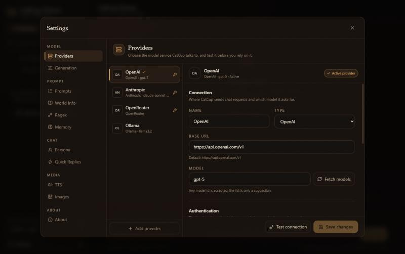

A roleplay client that keeps its own books.
One character or a whole group, with lorebooks, prompt presets, rolling memory, speech and images — every card and every chat an ordinary file on your own disk. One server serves three shapes: a browser tab, your LAN, and a Windows app.
This is the interface, running on the page. Type a line and Mira answers.
Your data stays files
Characters are PNG cards with their metadata inside the image, or plain JSON. Chats are JSONL, one message per line, swipes and branches included. Lorebooks, presets and settings are JSON. Copy the folder to back up, copy it to another machine to move, and open any of it in an editor.
data/ ├── characters/ cards, PNG or JSON ├── chats/ one JSONL per chat ├── worlds/ lorebooks ├── presets/ prompt presets ├── groups/ group rooms ├── user/images/ generated pictures ├── secrets.json API keys, server-only └── settings.json providers, personas, profiles
Point the importer at another app's data folder and its cards, chats, lorebooks and presets come across in one step. Nothing is converted into a private format.
What it does
- data/characters/ Characters and groups PNG, JSON V2/V3 and CharX cards. Talk to one character, or put five in a room with their own greetings, avatars and reply order. Works
- data/worlds/ Lorebooks Primary and secondary keys, recursion, inclusion groups with weights, sticky and cooldown effects, the token budget and every injection position — plus an inspector that shows why an entry fired. Works
- data/presets/ Prompt presets Import an OpenAI preset, reorder prompts, disable them, or move one into a chat injection with its own depth, order and role. Works
- data/chats/ Chats and branching Streaming replies with reasoning kept apart, swipes, editing, and a branch from any message that leaves the original chat intact. Works
- data/chats/ · summary Summary memory A rolling summary stored inside the chat file, next to the messages it summarises. Edit it yourself, or let it update after replies. Works
- user/images/ Speech and images Browser voices or an OpenAI-compatible speech endpoint. Pictures from Automatic1111, ComfyUI or an OpenAI-compatible endpoint, kept per character. Works
- data/secrets.json Providers Five request protocols, covering OpenAI, OpenRouter, Anthropic, Gemini, Ollama and any compatible endpoint you type in. Keys stay on the server. Works
- quickreplies/ Quick replies Sets with a button bar above the message box: seven commands that chain, no auto-execution or context menus yet. Partial
- Import Import from another app Scan another app's data folder, see what was found, and copy characters, chats, lorebooks and presets in one action. Works
How a reply is assembled
- Assemble The preset is built in order, with the persona, character and scenario in their slots.
- Scan lore Lorebook keys are matched against the recent chat; inclusion groups and timed effects decide what fires.
- Budget tokens The context is trimmed to the model's budget by a tokenizer for OpenAI, Claude and Gemini models.
- Call the provider One request to the active provider, in the protocol that provider speaks.
- Stream Tokens arrive over SSE. The server saves the message; the page only draws it.

What is not there yet
This is early-access software. These are the gaps worth knowing before you install it.
- Typed slash commands and scripting. A line like /send hello goes to the model as text; only Quick Reply buttons run commands.
- Extensions written for other clients. None load.
- Attachments and vision. No file upload and no image input.
- Vector memory. Long chats are trimmed to the budget; the summary is the only long-term memory.
- macOS and Linux. The shell packages on both and CI compiles them, but only Windows is released, and neither has been run.
- An unsigned installer. SmartScreen warns once on a downloaded copy; take the file from the release page and nowhere else.
The full lists are in Limitations · Format compatibility.
Install
Windows
Download the installer from the latest release and run it. It installs per user, needs no administrator and no separate Node, and keeps your data in %APPDATA%\dev.catcup.tavern. It is unsigned, so SmartScreen warns once and names no publisher: choose More info → Run anyway.
CatCup.Tavern_0.3.2_x64-setup.exe · All releases
Web or LAN from source
Needs Node 22.13 or newer and pnpm 11. You set an access password on first run, and only from the machine running the server.
pnpm install
pnpm dev
CATCUP_HOST=0.0.0.0 pnpm start
For a LAN, bind to every interface; the password is the only gate. Then open http://localhost:5173. There is no built-in TLS. Beyond a trusted network, put it behind a reverse proxy or a VPN.
Move an install
CATCUP_DATA_DIR points the app at another data folder. That is how an install moves to a new machine, or a desktop install adopts an existing library.
